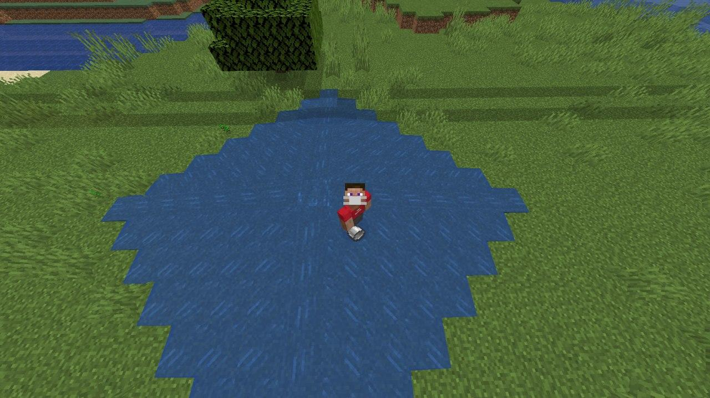

Q3: Solution and Afterthoughts#

Question 3 was a more balanced question compared to Question 1 and Question 2, one being really difficult, and the other being really easy. The participant's objective is to take the straightforward approach to Question 3 and try to make it more efficient. Mainly, this was a greedy algorithm question.
The base approaches#
All the approaches utilise the flood fill algorithm in one way or another. However, it is not too difficult to come up with the flood fill algorithm yourself either.
The most straightforward approach is to visit each block one by one from the top left, and then try to visit all blocks adjacent to it (up, down, left, right).
- If the adjacent block has a depth lower that current depth minus by one, then update that block with current depth minus by one. And visit that block to repeat the algorithm for its adjacent blocks
- If the adjacent block does not have a depth lower than current depth minus by one, or if it is an obstacle, do nothing, there is no need to update or visit that block
- If the current depth is zero, just backtrack.
The other similar approach is to start from the water source block and run the same above three steps.
The problem#
Both approaches can be extremely inefficient, possibly having to recompute each block's depth multiple times, which can lead to recomputation of the blocks below it as well. The above approaches are depth-based, going deep into branches right from the start, instead of spreading out slowly.
A more efficient, greedy approach#
Intuition tells us that blocks closer to the water source block are more likely to be deeper (more water) than blocks further from it. Obstacles may complicate things and the bove may not always hold true as a result, but it is still a good general rule of thumb to follow.
Thus, we can try to be greedy by choosing to update blocks that are likely to have a larger water depth first (i.e. blocks closer to the water source), before exploring the ones that are likely to be shallower (i.e. blocks further from the water source). Statistically, this minimizes the chance of us having to re-update later.
To do this, we need to explore the blocks by going in a spiral around the water source block. One way to do this is to use a queue. A queue follows a first-in-first-out policy, allowing us to "remember" or "save" the blocks we want to visit later (i.e. we can store adjacent blocks of the current block we are visiting (that we have recently updated) into the queue), while trying clear the blocks that we have marked for visiting earlier. This queue causes us to go in a spiral pattern, and we are going broad first rather than deep, minimizing our inefficiency. Eventually, the algorithm ends when there are no more blocks in the queue (i.e. no more blocks that we need to visit/update).
Python3 Approach for Greedy Queue Algorithm
def flood(grid, r, c, depth, x, y):
# For loop algorithm (function that calls itself) that uses a queue
if depth == 1:
# If water depth is one, there is no need to update anything else
return
Q = [] # Initialise Queue to be empty
Q.append((r, c, depth)) # Add water source block's position and depth to the queue
while len(Q) != 0:
# While queue is not empty, visit all the blocks in the queue, FIFO
(nx, ny, d) = Q.pop(0) # Visit block at the start of the queue
for (i, j) in [(nx-1, ny), (nx+1, ny),(nx, ny-1), (nx, ny+1)]:
# Try to see if adjacent blocks need to be updated
if i < x and i >= 0 and j < y and j >= 0 \
and grid[i][j] >= 0 and grid[i][j] < d -1:
# If adjacent blocks have lower water depth and current -1
# and are within boundaries
grid[i][j] = d - 1 # Set their new water depth to current depth - 1
Q.append((i, j, d - 1)) # Since water depth was updated for that block
# Might need to update depth of blocks adjacent to it, so add to queue
rows, cols, depth = [int(i) for i in input().split()]
grid = [[0 for i in range(cols)] for j in range(rows)]
water_r = 0
water_c = 0
for row in range(rows):
# We store the source block's water depth
# Any blocks is an obstacle is marked with -1
# All other blocks are marked as 0
s = input().split()
for col in range(cols):
if s[col] == "X":
grid[row][col] = -1
elif s[col] == ".":
grid[row][col] = 0
else:
grid[row][col] = int(s[col])
water_r = row
water_c = col
flood(grid, water_r, water_c, depth, rows, cols)
# Result obtained, just convert it into the format requested by qn
for row in range(rows):
for col in range(cols):
if grid[row][col] == 0:
print('.', end=" ")
elif grid[row][col] == -1:
print('X', end=" ")
else:
print(grid[row][col], end=" ")
print()
Compare it to the more naive, less greedy approach below.
Python3 Solution for depth-first approach
def flood(grid, r, c, depth, x, y):
# Recursive algorithm (function that calls itself) that goes deep first
if depth == 1:
return
for (i, j) in [(r-1, c), (r+1, c), (r, c-1), (r, c+1)]:
if i < x and i >= 0 and j < y and j >= 0 \
and grid[i][j] >= 0 and grid[i][j] < depth -1:
flood(grid, i, j, depth - 1, x, y)
rows, cols, depth = [int(i) for i in input().split()]
grid = [[0] * cols] * rows
water_r = 0
water_c = 0
for row in range(rows):
s = input().split()
for col in range(cols):
if s[col] == "X":
grid[row][col] = -1
elif s[col] == ".":
grid[row][col] = 0
else:
grid[row][col] = int(s[col])
water_r = row
water_c = col
flood(grid, water_r, water_c, depth, rows, cols)
for row in range(rows):
for col in range(cols):
if grid[row][col] == 0:
print('.', end=" ")
else:
print(grid[row][col], end=" ")
print()